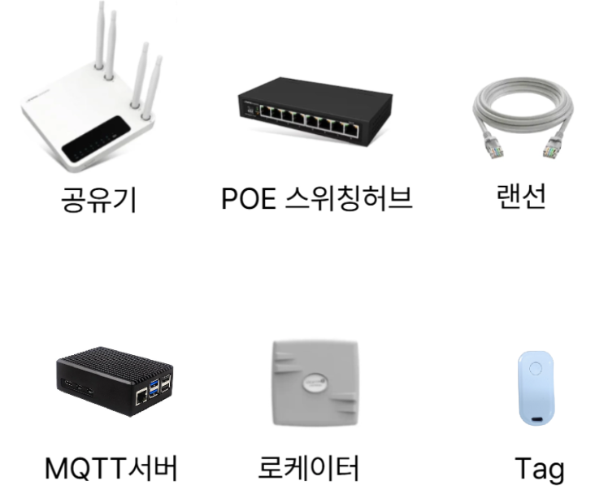
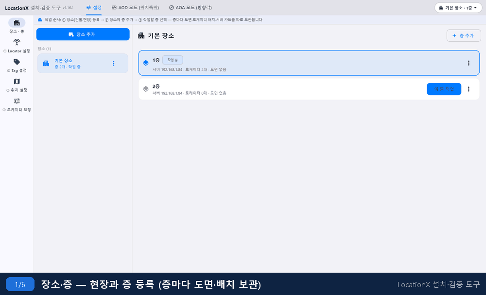

1시스템 구성
시스템 구성도
태그의 BLE 신호를 로케이터가 수신하고, PoE 스위칭 허브를 거쳐 MQTT 서버가 위치를 계산하며, PC에서 설정 및 모니터링하는 구조입니다.

하드웨어 구성품
- 공유기 (iptime 권장)
- 포지션 서버 카드 — 라즈베리파이, 호스트명
aoa-server-1(MQTT 브로커 + 위치 계산 엔진) - PoE 스위칭 허브
- LocationX 로케이터
CB-AOAAOD-L-POE2601(4×4 URA 안테나) - BLE 태그
CB-AOAAOD-Tag-Hart/CB-AOAAOD-Tag-Motion

소프트웨어
| 소프트웨어 | 용도 | 구분 |
|---|---|---|
| LocationX 설치·검증 도구 | 장비 검색 · 로케이터 배치·보정 · 태그 설정·OTA · 위치(AOD)·방향각(AOA) 확인 | 필수 (Windows) — GitHub |
| MQTT Explorer | MQTT 원시 메시지 모니터링 | 선택 — mqtt-explorer.com |
네트워크 구성
| 구성 요소 | IP 주소 | 포트 |
|---|---|---|
| 공유기 관리자 | 192.168.0.1 (iptime 기본) | - |
| 포지션 서버 카드 (MQTT 브로커) | DHCP 할당 — 설정 도구의 [장치 검색]으로 확인 | 1883 |
| 로케이터 | DHCP 자동 할당 | - |
2설치 — 초기 설정
설정 순서
- 공유기 실행 — iptime 공유기 기준, 관리자 페이지는
192.168.0.1 - 포지션 서버(MQTT 서버) 실행 — 서버 카드에 전원을 넣으면 자동으로 실행됩니다
- 로케이터 연결 — PoE 스위칭 허브에 랜선으로 연결
⚠️MQTT 서버가 먼저 실행되어 있어야 합니다. 로케이터는 전원이 연결되면 별도 설정 없이 자동으로 MQTT 서버에 연결하여 데이터를 전송합니다.
로케이터 설치 (초기 설정)
초기 설정 시 아래와 같이 설치한 후 동작을 확인합니다. 로케이터는 천장(권장 높이 약 3m)에 안테나면이 바닥을 향하도록 설치합니다.


💡설치 후 로케이터의 위치·자세 값 등록과 변경은 아래 설치·검증 도구에서 처리합니다. config 파일을 직접 수정할 필요가 없습니다.
3설정·검증 — LocationX 설치·검증 도구
장비를 찾아 배치·보정하고(설정), 위치와 각도가 제대로 나오는지 확인(검증)하는 Windows 프로그램입니다.
상단 탭은 [설정] [AOD 모드 (위치측위)] [AOA 모드 (방향각)] 세 가지이며, 각 탭 왼쪽 메뉴로 화면을 고릅니다.
도구는 GitHub Release에서 받습니다
(실행 파일 locationx_install_tool_vX.Y.Z.exe).

3-1. 장비 검색 — 설정 › ① Locator 설정
- [Locator 검색 (UDP)]을 누르면 같은 네트워크의 서버 카드와 로케이터가 목록에 나타납니다.
- 로케이터별 LED 식별·재시작·재부팅·소프트웨어 업데이트도 이 화면에서 합니다.
3-2. 도면 준비와 로케이터 배치 — 설정 › ③ 위치 설정
- 도면 불러오기 → 스케일 보정(실제 거리를 아는 두 점) → 원점 지정.
- 왼쪽 목록의 로케이터를 캔버스로 드래그해 실제 위치에 놓고, 높이(z)와 자세(orientation)를 입력합니다. 자세는 AOD 모드의 각도 점선이 실제 태그를 가리키도록 맞춥니다.
- 오른쪽 전역 설정에서 위치 추정 모드(2D/3D)·태그 높이 고정·각도 튐 제거·필터를 조정합니다.
- [Top | 3D] 전환, 3D의 회전 편집으로 자세를 눈으로 맞출 수 있습니다.

3-3. 서버로 전송
- [서버로 전송]을 누르면 변경 내용(diff)을 확인한 뒤 서버에 적용되고 위치 계산 엔진이 재시작됩니다.
- 장소·층별로 도면·배치가 자동 저장되며, 프로젝트 파일(
.lxpos.json)로도 보관할 수 있습니다.
3-4. 위치 확인 — AOD 모드 (위치측위)
내부망 메뉴에서 서버 카드 브로커에 연결하면 도면 위에서 태그 위치를 2D/3D로 확인합니다. 로케이터별 각도 점선·커버리지가 함께 그려지고, 오른쪽 태그 목록에서 볼 태그를 체크로 고릅니다. 외부망 메뉴는 외부 브로커로 중계된 위치·장비 상태를 봅니다.

3-5. 방향각 확인 — AOA 모드 (방향각)
로케이터 하나를 골라 태그 방향(방위·앙각)을 0~360° 원 / 3D 뷰 / 흐르는 그래프로 봅니다. 설치 방향 점검, 반사·흔들림 진단에 사용합니다.

3-6. 태그 관리 — 설정 › ② Tag 설정
- 태그 검색·상태 읽기·송신 주기(ms) 설정(저전력 운용)·펌웨어 무선 업데이트(OTA)
- 접속 경로: PC 블루투스 또는 로케이터(현장에 설치된 로케이터가 대신 접속 — PC가 태그 근처에 없어도 됨)
로케이터 상태 확인 웹
- 각 로케이터의 안테나 수신 여부·CPU 온도·브로커 연결·각도 그래프를 브라우저(
http://<카드IP>:8080)로 확인
4MQTT 데이터 확인 (MQTT Explorer)
원시 MQTT 메시지를 직접 확인하고 싶을 때는 MQTT Explorer를 사용합니다.
- MQTT Explorer를 실행하고 +Connections 버튼을 눌러 MQTT 연결을 설정합니다.
- Name:
aoa-server-1 - Protocol:
mqtt:// - Host:
<서버 카드 IP>(설치·검증 도구의 Locator 검색으로 확인) - Port:
1883
- Name:
- ADVANCED를 눌러 Topic을
controlbit/#로 설정하고 BACK으로 돌아옵니다. - CONNECT를 눌러 MQTT Broker에 연결합니다.
- 데이터가 수신되는 것을 확인할 수 있으며, azimuth와 elevation 데이터를 확인할 수 있습니다.
수신 데이터 필드
| 필드 | 설명 |
|---|---|
azimuth | 로케이터(안테나 배열) 기준 태그 신호의 방위각 (수평 각도) |
azimuth_stdev | 방위각 측정값의 표준편차 |
elevation | 태그 신호의 고도각 (수직 각도) |
elevation_stdev | 고도각 측정값의 표준편차 |
# 각도 (로케이터 → 브로커 · 판 평면 기준 앙각 0~90°) controlbit/aoa/angle/<locator_id>/<tag_id> { "azimuth": 42.1, "azimuth_stdev": 1.3, "elevation": 55.6, "elevation_stdev": 2.0 } # 위치 (위치 엔진 → 브로커 · 미터 단위) controlbit/aoa/position/<positioning_id>/<tag_id> { "x": 2.41, "x_stdev": 0.12, "y": -1.02, "y_stdev": 0.10, "z": 0.0, "z_stdev": 0.01 }